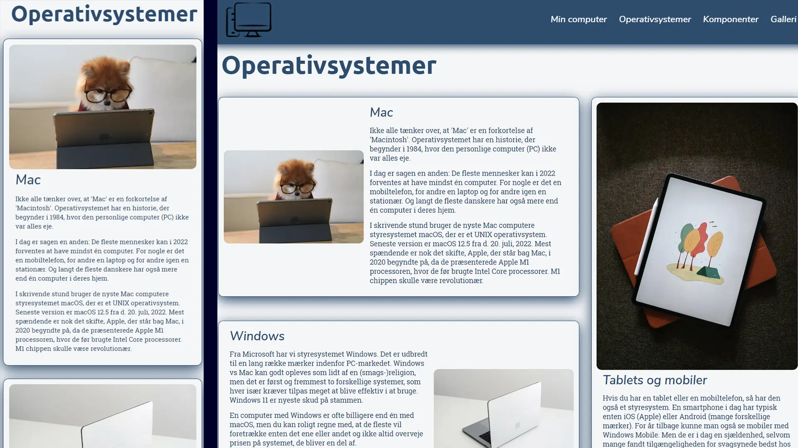
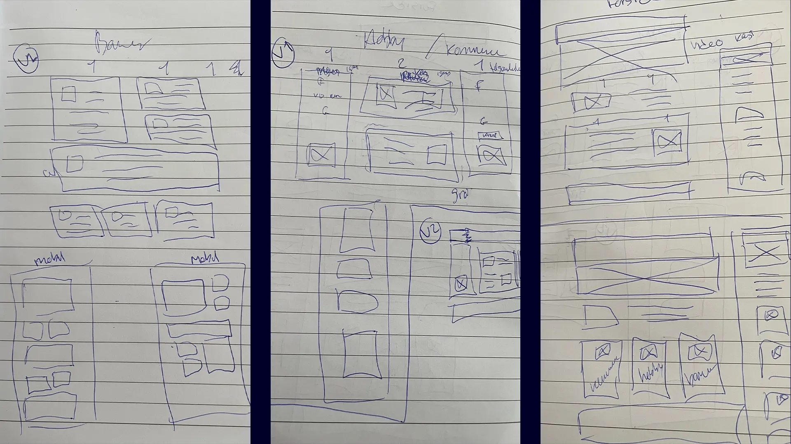
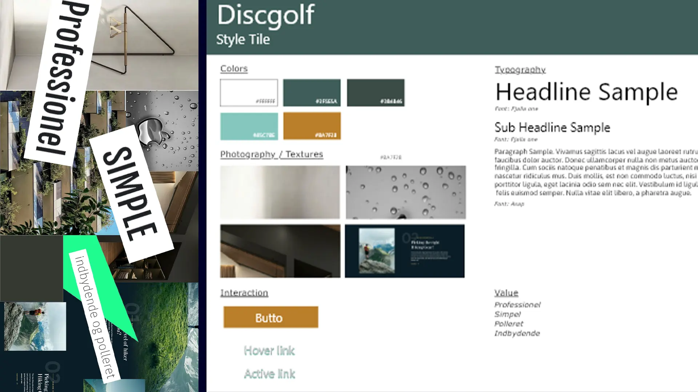
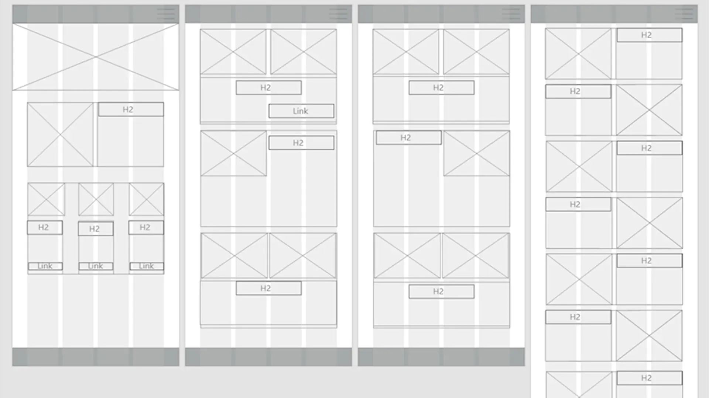
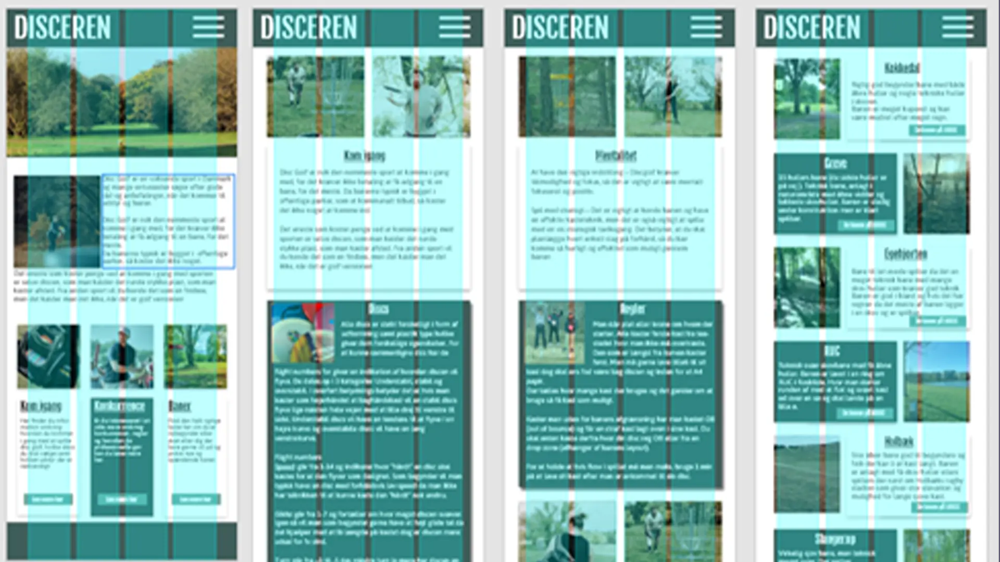
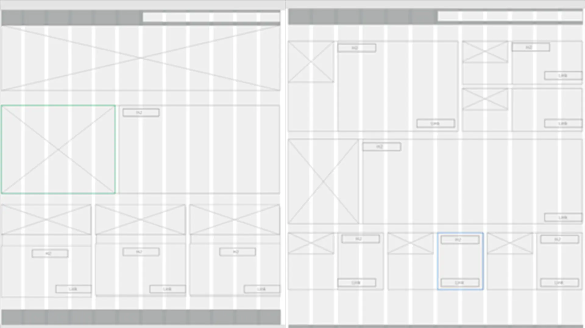

Grundlæggende web
I vores første tema om grundlæggende web, stiftede jeg kendskab med fundamentale kodnings redskaber i
HTML og CSS. Samt lærte grundlæggende principper i XD og Photoshop. Jeg lærte omkring de forskellige
filtyper png, jpg, gif, svg og webP, forskellen på vektor og pixelgrafik og hvilke filtyper man brugte
hvornår. Derefter blev jeg introduceret til programmer som, VS code og FileZilla, hvor jeg lærte hvordan
jeg koder og uploadede filerne til mit domæne.
Studiestartsprøven
Det første site vi kodet, var vores studiestarts prøve, hvor jeg lærte hvordan man opsætter indhold i
form af tekst og billeder i HTML og CSS ud fra et wireframe og layoutdiagram. Derudover blev vi
introduceret til media-queries samt flexbox og grid for at kunne opbygge hjemmesiden ud fra diagrammerne
samt gøre sitet responsivt.
Mobil & desktop:

STUDIESTARTSPRØVE
Emnesite
Da vi skulle lave vores emnesite, blev vi introduceret til designprincipper som gastaltlove,
konventioner, kontraster, farver og fonte.
Jeg valgte at lave et site om discgolf hvor jeg fokuserede på stilarten digital modernisme. Da jeg lavede
mit moodboard fokuserede jeg på værdier som professionelt, simpelt, polleret og indbydende. Grundet
valget af stilarten, fokuserede jeg på at lave et simpelt og professionelt design, og fandt fonte som
udstrålede enkelthed og var letlæselige. Mit farve valg var rene/ensartede farver men vigtigt at der var
kontrastfarver til funktioner som skulle skille sig ud.
Layoutet skulle være harmonisk og simpelt at overskue, derfor brugte jeg gastaltlove som loven om nærhed,
lighed og lukkethed.
Af denne opgave lærte jeg hvor vigtigt det kan være at have en god plan for starten, i form af en
styletile, diagrammer som gør det nemmere når man skal kode sitet. Det at have en prototype at læne sig
op af under kodningsprocessen var også tidssparende, da man nemt kunne prøve ting af inden man begyndte
at kode samt hvor svært det kan være at have en ide på papir men som skal virke og give mening når man
koder den.
Skitser
Styletile & Moodboard


Diagrammer
Mockup mobil



EMNESITE